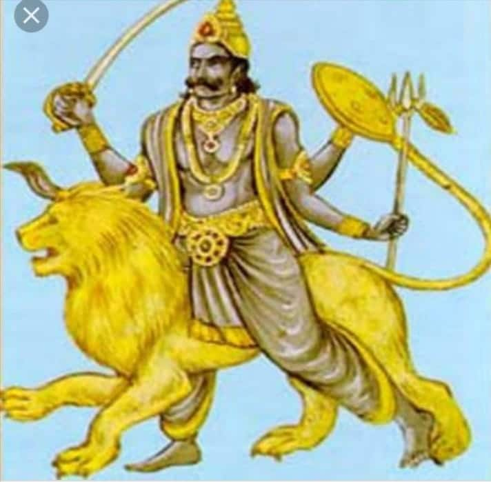

Rahu Puja - Worship of Rahu (The Shadow Planet)
Rahu Puja: Worship of Rahu (The Shadow Planet)
Rahu Puja is a sacred Hindu ritual dedicated to Rahu, the shadow planet. It is believed that performing this puja can alleviate the malefic effects of Rahu, reduce obstacles in life, and bring success, wisdom, and spiritual growth.
What is Rahu Puja?
Rahu Puja is a sacred ritual performed to worship Rahu, the shadow planet in Vedic astrology. Rahu is not a physical planet, but a point where the Moon’s orbit intersects the Sun’s orbit. It is considered a malefic planet that can cause confusion, illusion, and obstacles. However, by worshipping Rahu, one can neutralize its negative effects and seek wisdom, spiritual enlightenment, and protection from the challenges it may bring.
Why Do We Perform Rahu Puja?
- Relieves Malefic Effects: Helps to reduce the malefic effects of Rahu in the natal chart.
- Success and Prosperity: Improves career prospects, wealth, and overall success in life.
- Spiritual Growth: Rahu is associated with spiritual transformation, helping individuals progress on their spiritual path.
- Overcoming Obstacles: Rahu Puja is believed to remove blocks and obstacles in various aspects of life, including health and relationships.
- Promotes Mental Clarity: Worshipping Rahu helps overcome confusion, illusion, and delusion, bringing clarity to the mind.
Benefits of Rahu Puja
- Alleviates Illusion: Reduces the negative effects of illusion and deception caused by Rahu.
- Brings Success: Helps in achieving success, especially in competitive fields, business, and career growth.
- Restores Mental Peace: Calms the mind and brings clarity, reducing confusion and negative thinking.
- Removes Obstacles: Removes the hurdles and delays in professional and personal life.
- Spiritual Progress: Helps elevate spiritual consciousness and leads to better self-awareness and enlightenment.
How to Perform Rahu Puja (Step-by-Step)
Rahu Puja is typically performed on Saturdays or during Rahu Kaal (the inauspicious period of Rahu during the day). Here’s a step-by-step guide:
- Preparation: Choose a quiet and clean place. Gather necessary items like a picture or idol of Rahu, sesame seeds, black cloth, incense, a lamp, and offerings of black sesame seeds, mustard oil, or sugar.
- Clean Yourself: Bathe and wear clean clothes, preferably dark colors such as black or blue, to honor Rahu.
- Light the Lamp: Light a lamp made of mustard oil or ghee and offer it to Rahu as a symbol of devotion and illumination.
- Chant the Rahu Mantra: Recite mantras like “Om Rahave Namah” or “Om Raam Rahve Namah” 108 times to invoke Rahu’s blessings and neutralize his negative effects.
- Offer Black Sesame Seeds: Offer black sesame seeds to Rahu, as they are considered very auspicious for mitigating the planet's malefic effects.
- Offer Prayers: Pray for success, wisdom, and protection from Rahu's negative influence. Ask for Rahu's blessings in overcoming obstacles and achieving prosperity.
- Perform Aarti: Perform Aarti using a lighted lamp to complete the ritual.
- Prasad: Offer prasad (like fruits or sweets) after the puja and distribute it among family members or devotees as a mark of the blessings received.
Conclusion
Rahu Puja is a highly effective ritual for reducing the negative effects of Rahu in one’s life. It brings prosperity, success, and spiritual growth while helping to overcome obstacles and mental confusion. Performing this puja regularly can invite Rahu's blessings, helping you navigate life's challenges and achieve both material and spiritual success.